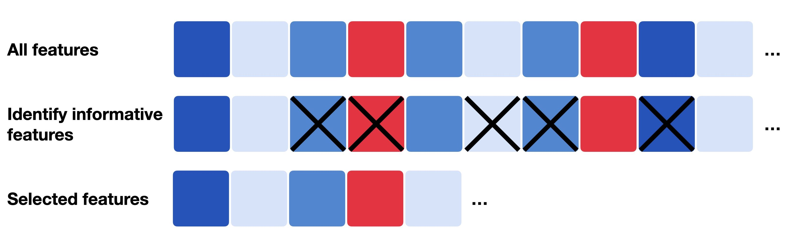

10. 特征选择#
关键要点
在单细胞 RNA-seq 数据中，特征选择侧重于使用诸如偏差（deviance）这类方法来识别最具信息量的基因，从而避免任意归一化选择所带来的偏倚。
环境设置
安装 conda:
在创建环境之前，请确保 conda 已安装在您的系统中。
保存 yml 内容:
将 yml 选项卡中的内容复制到名为
environment.yml的文件中。
创建环境:
打开终端或命令提示符。
运行以下命令：
conda env create -f environment.yml
激活环境:
创建好环境后，使用以下命令激活它：
conda activate <environment_name>
替换
<environment_name>，名称就是在environment.yml文件中指定的那个。在 yml 文件里，它看起来像这样：name: <environment_name>
验证安装:
通过运行以下命令，检查环境是否创建成功：
conda env list
name: preprocessing
channels:
- bioconda
- conda-forge
dependencies:
- conda-forge::ipywidgets=8.1.5
- conda-forge::leidenalg=0.10.2
- conda-forge::numba=0.61.0
- conda-forge::python=3.12.9
- conda-forge::r-base=4.3.3
- conda-forge::r-soupx=1.6.2
- conda-forge::r-sctransform=0.4.1
- conda-forge::r-glmpca=0.2.0
- conda-forge::rpy2=3.5.11
- conda-forge::scanpy=1.11.1
- conda-forge::session-info=1.0.0
- bioconda::anndata2ri=1.3.2
- bioconda::bioconductor-scdblfinder=1.16.0
- bioconda::bioconductor-scry=1.14.0
- bioconda::bioconductor-scran=1.30.0
- bioconda::bioconductor-glmgampoi=1.14.0
- pip
- pip:
- lamindb[bionty,jupyter]
获取数据和笔记本
本书使用 lamindb，并通过 theislab/sc-best-practices 实例 来存储、共享和加载数据集与笔记本。感谢 Lamin Labs 提供免费托管服务。
安装 lamindb
安装 lamindb Python 软件包：
pip install lamindb
可选择创建 lamin 账户
按照以下 说明 注册并登录。
验证你的设置
运行
lamin connect命令：
import lamindb as ln ln.Artifact.connect("theislab/sc-best-practices").df()
你现在应该看到最多100个存储的数据集。
访问数据集（Artifact）
在 Artifacts 页面 搜索该数据集。
加载一个 Artifact 及其对应的对象：
import lamindb as ln af = ln.Artifact.connect("theislab/sc-best-practices").get(key="key_of_dataset", is_latest=True) obj = af.load()
该对象现在已可在内存中访问，并可用于分析。请调整
ln.Artifact.connect("theislab/sc-best-practices").get("SOMEIDXXXX")后缀以获取相应的版本。访问笔记本（Transform）
在 Transforms 页面 搜索该笔记本。
加载笔记本：
lamin load <notebook url>
这会把笔记本下载到当前工作目录。与
Artifacts类似，你可以调整后缀 ID 来获取旧版本。
10.1. 动机#
我们现在得到了一种归一化的数据表示，它仍然保留了生物学异质性，但基因表达中的技术性采样效应有所降低。scRNA-seq 数据集通常包含多达 30,000 个基因（取决于物种），而到目前为止，我们只去除了在至少 20 个细胞中都未检测到的基因。然而，剩余基因中有许多并不具信息量，且大多为零计数。因此，标准的预处理流程会包含特征选择这一步，旨在剔除那些不具信息量、可能无法代表样本间有意义生物学变异的基因。
{kind=link}

图10.1 特征选择通常指只选取一部分相关特征（基因）的过程，这些特征可以是最具信息量的、变异最大的，或偏差最高的。#
通常，scRNA -seq 实验聚焦于某一特定组织，因此只有一小部分基因是有信息量、且在生物学上具有变异性的。传统方法和流程要么计算所有基因的变异系数（高变基因），要么计算所有基因的平均表达水平（高表达基因），从中选出 500–2000 个基因，并将这些特征用于下游分析步骤。然而，这些方法对此前所用的归一化技术非常敏感。如前所述，以往的预处理流程包括用 CPM 归一化、随后做对数变换。但由于对数变换无法作用于精确的零值，分析人员往往会加上一个小的 伪计数（例如 1，即 log1p）到所有归一化计数上，然后再对数据取对数。然而，伪计数的选择是任意的，可能给变换后的数据引入偏倚。这种任意性进而也会影响特征选择，因为观测到的变异性取决于所选的伪计数。一个接近零的小伪计数值，会增大零计数基因的方差 [Townes et al., 2019].
Germain 等人转而提出使用 deviance 来进行特征选择，它作用于原始计数 [Germain et al., 2020]。偏差（deviance）可以用闭式（closed form）计算，用于量化某个基因是否在各细胞间呈现恒定的表达谱——这类基因不具信息量。表达恒定的基因可由一个多项式零模型描述，并用二项偏差来近似。在各细胞间高度有信息量的基因会有较高的偏差值，表明零模型对其拟合很差（即它们在各细胞间并非恒定表达）。该方法据此按偏差值对所有基因排序，只选取高偏差的基因。
如前所述，偏差可以用闭式计算，并由 R 包 scry 提供。
我们从建立环境开始。
import logging
import lamindb as ln
import matplotlib.pyplot as plt
import numpy as np
import rpy2.rinterface_lib.callbacks as rcb
import rpy2.robjects as ro
import rpy2.robjects.packages as rpackages
import scanpy as sc
import seaborn as sns
from rpy2.robjects import default_converter, numpy2ri, pandas2ri, r
from rpy2.robjects.conversion import localconverter
# Suppress verbose logging from Scanpy
sc.settings.verbosity = 0
# Set figure parameters for clean, minimal plots
sc.settings.set_figure_params(dpi=80, facecolor="white", frameon=False)
assert ln.setup.settings.instance.slug == "theislab/sc-best-practices"
ln.track()
rcb.logger.setLevel(logging.ERROR)
%load_ext rpy2.ipython
%%R
library(scry)
library(SingleCellExperiment)
接着，我们从 前一个章节加载上一章中已经归一化好的数据集。偏差作用于原始计数，因此无需把 adata.X 替换为某个归一化层，我们可以直接使用归一化笔记本中所存储的对象。
af = ln.Artifact.connect("theislab/sc-best-practices").get(
key="preprocessing_visualization/s4d8_normalization.h5ad", is_latest=True
)
adata = af.load()
adata
AnnData object with n_obs × n_vars = 14814 × 20223
obs: 'n_genes_by_counts', 'log1p_n_genes_by_counts', 'total_counts', 'log1p_total_counts', 'pct_counts_in_top_20_genes', 'total_counts_mt', 'log1p_total_counts_mt', 'pct_counts_mt', 'total_counts_ribo', 'log1p_total_counts_ribo', 'pct_counts_ribo', 'total_counts_hb', 'log1p_total_counts_hb', 'pct_counts_hb', 'outlier', 'mt_outlier', 'soupx_groups', 'scDblFinder_score', 'scDblFinder_class', 'size_factors'
var: 'gene_ids', 'feature_types', 'genome', 'interval', 'mt', 'ribo', 'hb', 'n_cells_by_counts', 'mean_counts', 'log1p_mean_counts', 'pct_dropout_by_counts', 'total_counts', 'log1p_total_counts', 'n_cells'
layers: 'analytic_pearson_residuals', 'counts', 'log1p_norm', 'scran_normalization', 'soupX_counts'
与之前类似，我们将 AnnData 对象保存到 R 环境中。
X_sparse = adata.X.T.tocoo()
Matrix = rpackages.importr("Matrix")
with localconverter(ro.default_converter + pandas2ri.converter + numpy2ri.converter):
ro.globalenv["obs"] = adata.obs
ro.globalenv["var"] = adata.var
i, j = X_sparse.row, X_sparse.col
x = X_sparse.data
ro.globalenv["i"] = ro.IntVector((i + 1).tolist()) # R is 1-indexed
ro.globalenv["j"] = ro.IntVector((j + 1).tolist())
ro.globalenv["x"] = ro.FloatVector(x.tolist())
r("X <- sparseMatrix(i = i, j = j, x = x, dims = c({}, {}))".format(*X_sparse.shape))
<rpy2.robjects.methods.RS4 object at 0x164985550> [25]
R classes: ('dgCMatrix',)
现在我们可以直接在未归一化的计数矩阵上调用基于偏差的特征选择，并将二项偏差值导出为一个向量。
%%R
sce <- SingleCellExperiment(
assays = list(X = X),
colData = obs,
rowData = var
)
sce <- devianceFeatureSelection(sce, assay = "X")
with localconverter(default_converter + pandas2ri.converter + numpy2ri.converter):
binomial_deviance = ro.r("rowData(sce)$binomial_deviance")
下一步，我们对该向量排序，选出偏差最高的前 4000 个基因，并将它们保存为一个额外的列，位于 .var 中，命名为“highly_deviant”。我们还额外保存了计算得到的二项偏差，以便日后想要再选取不同数量的高变基因时使用。
idx = binomial_deviance.argsort()[-4000:]
mask = np.zeros(adata.var_names.shape, dtype=bool)
mask[idx] = True
adata.var["highly_deviant"] = mask
adata.var["binomial_deviance"] = binomial_deviance
最后，我们将特征选择的结果可视化。我们用一个 scanpy 函数计算每个基因在所有细胞中的均值和离散度。
sc.pp.highly_variable_genes(adata, layer="scran_normalization")
我们通过绘制各基因的离散度对均值的散点图，并按“highly_deviant”着色，来查看结果。
ax = sns.scatterplot(
data=adata.var, x="means", y="dispersions", hue="highly_deviant", s=5
)
ax.set_xlim(None, 1.5)
ax.set_ylim(None, 3)
plt.show()
{kind=link}
我们观察到，平均表达较高的基因被选为高偏差基因。这与以下研究的经验观察一致： [Townes et al., 2019].
af = ln.Artifact.from_anndata(
adata,
key="preprocessing_visualization/s4d8_feature_selection.h5ad",
description="anndata after feature selection",
).save()
af
10.2. 参考文献#
Pierre-Luc Germain, Anthony Sonrel, and Mark D. Robinson. pipeComp, a general framework for the evaluation of computational pipelines, reveals performant single cell rna-seq preprocessing tools. Genome Biology, 21(1):227, September 2020. URL: https://doi.org/10.1186/s13059-020-02136-7, doi:10.1186/s13059-020-02136-7.
F. William Townes, Stephanie C. Hicks, Martin J. Aryee, and Rafael A. Irizarry. Feature selection and dimension reduction for single-cell rna-seq based on a multinomial model. Genome Biology, 20(1):295, Dec 2019. URL: https://doi.org/10.1186/s13059-019-1861-6, doi:10.1186/s13059-019-1861-6.
10.3. 贡献者#
我们衷心感谢以下人员的贡献：
10.3.2. 审阅者#
Lukas Heumos